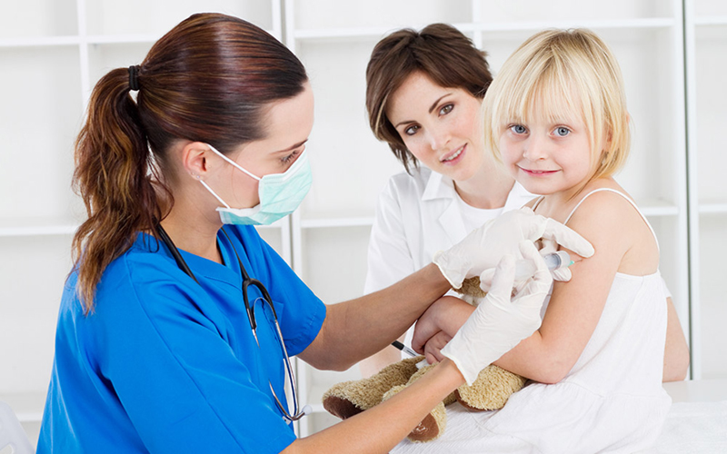

| MS RAMAIAH Hospital | HOME ABOUT US SERVICE EEG CONTACT US ADMIN LOGIN |
|
Welcome to MS RAMAIAH HOSPITAL BEST MEDICAL AND RESEARCH CENTER Our Founder Chairman, Sri M S Ramaiah was a firm believer in the saying ‘what we do for ourselves dies with us and that we do for others remains and is immortal’; walking the talk, he perceived that - for the nation to develop, investment in education and indigenous skill development was the way forward. Further endorsing this thought, he established the M S Ramaiah Educational institute in 1962 and M S Ramaiah Medical College in 1979. Ramaiah Academy of Health and Allied Sciences established under the Gokula Education Foundation soon branched out into seventeen educational institutions & two medical colleges. Carrying his father’s legacy forward, Dr M R Jayaram has been extensively involved in providing quality education & healthcare. Dr Jayaram was instrumental in integrating 19 institutions which are a part of the Ramaiah campus into one single identity – The Ramaiah Group. Ramaiah Group today encompasses the Memorial Hospital, the Medical College Hospital, the Dental Hospital and the Indic Specialty Ayurveda Restoration Hospital. Standing as a testimony to the values and ideologies of the founder, the group comprises an elite bunch of people who advocate commitment & excellence in their respective fields. |
 |
|
Address MS RAMAIAH HOSPITAL & Research Center New BEL Rd, M S Ramaiah Nagar, MSRIT Post, Bengaluru , Karnataka 560054 Contact No - 9988776655 Email: msramaiah@hospital.com |